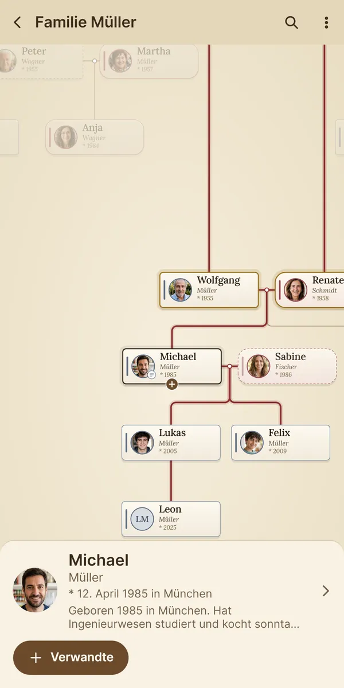
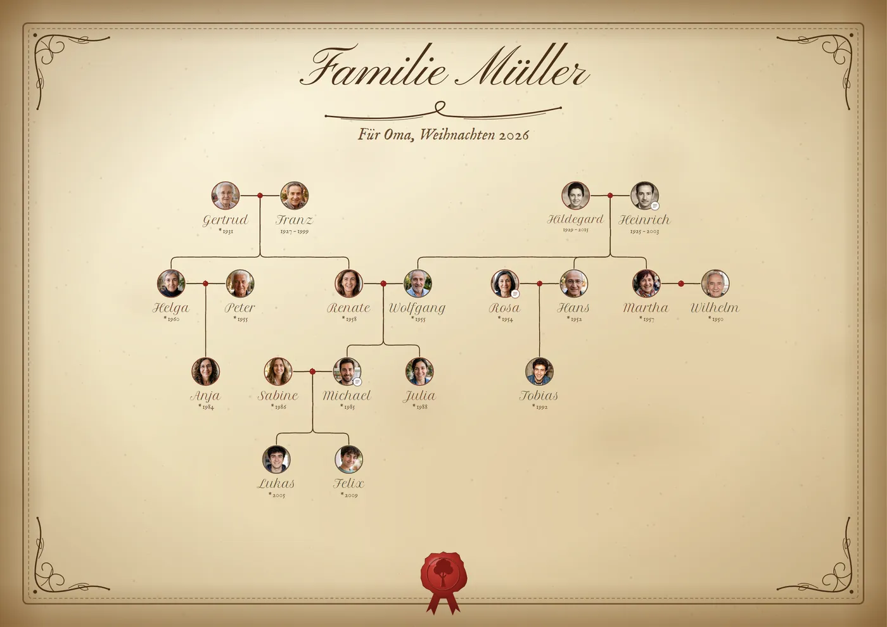
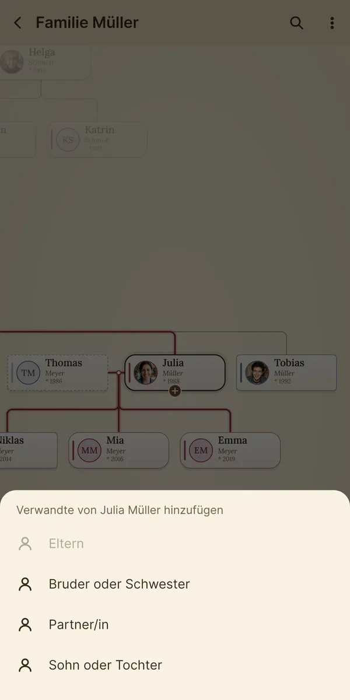
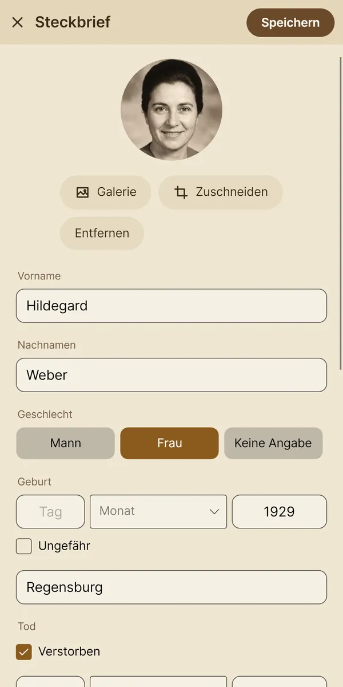
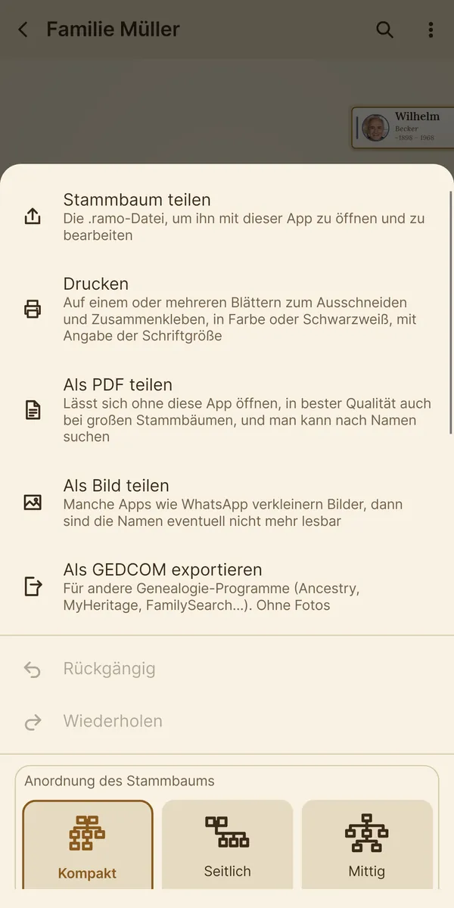
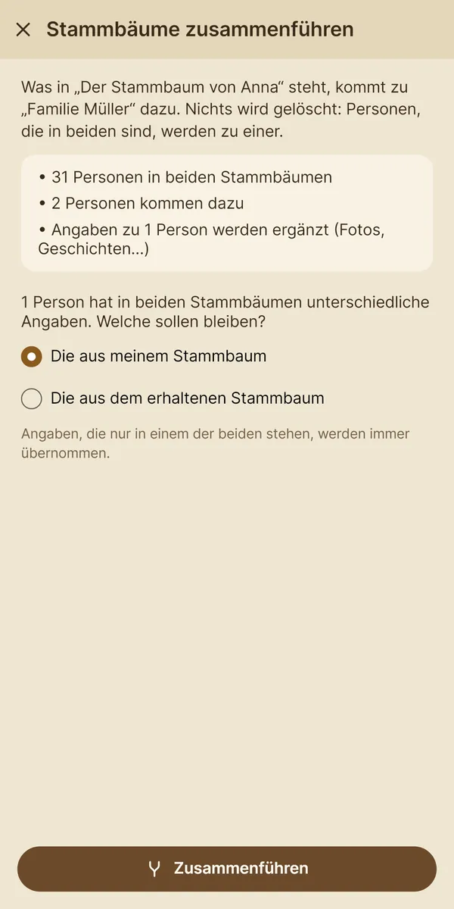
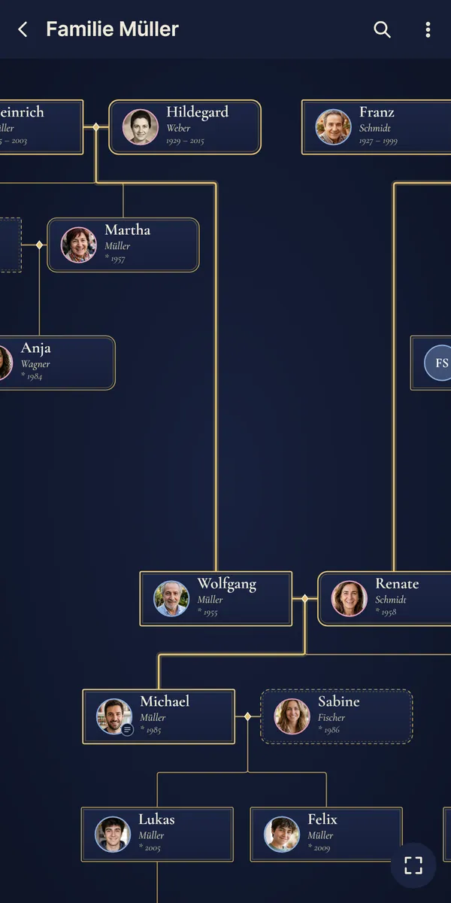
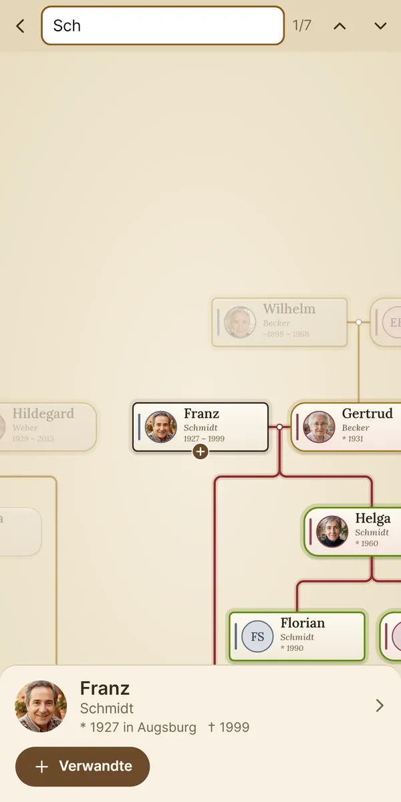
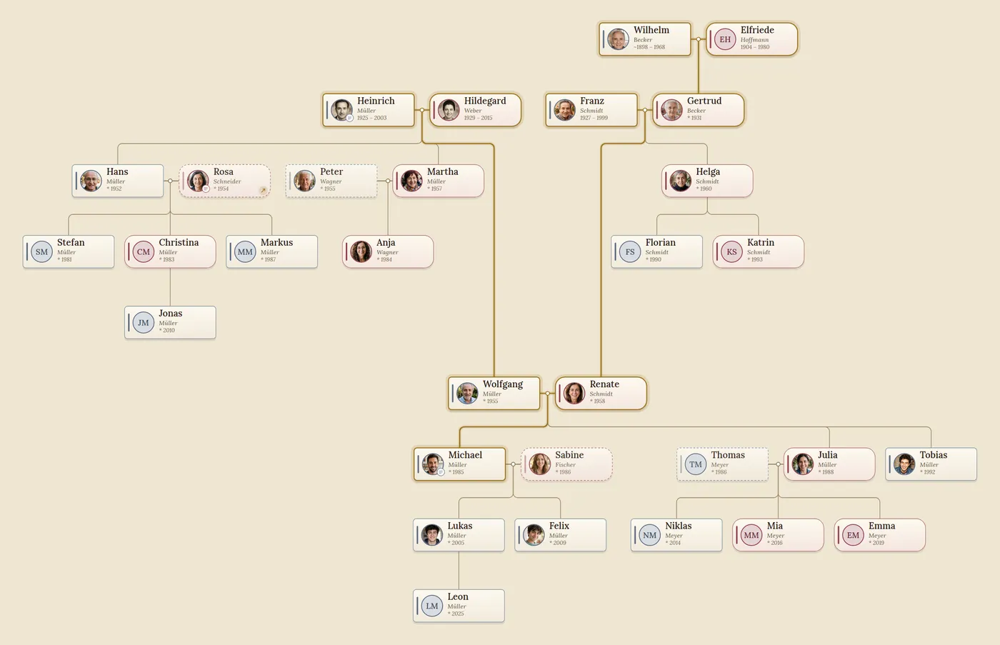

Einfacher Stammbaum
Der Stammbaum deiner Familie, einfach erstellt und verschenkt
Erstelle euren Stammbaum auf dem Handy, teile ihn als PDF mit der ganzen Familie und drucke ihn groß aus, für die Wand zu Hause oder als Geschenk.
Kostenlos zum Start · Ohne Konto und Werbung · Ohne Abo


Einfach von der ersten Minute an
Fang bei dir an. Tippe auf eine Karte und füge Eltern, Partner, Kinder oder Geschwister hinzu: Ramo ordnet den Stammbaum selbst an, auch wenn die Familie groß wird. Du brauchst weder Ahnenforschungs-Kenntnisse noch eine Anleitung.
- Fotos aus der Galerie oder von der Kamera, mit ungefähren Daten, wenn du sie nicht genau weißt.
- Die Geschichte jeder Person: wo sie geboren wurde, was sie gemacht hat, die Familienanekdoten.
- Finde jeden über den Namen und tippe auf jemanden, um seine Vorfahren und Nachkommen hervorzuheben.


Teile ihn mit der ganzen Familie
Schick den Stammbaum als PDF per Nachricht oder E-Mail: Er kommt vollständig und gestochen scharf an, und man kann hineinzoomen, um jeden Namen zu lesen. Oder als Bild, oder auf Papier.
Oder schick den Stammbaum selbst: Deine Familie öffnet ihn mit Ramo, das kostenlos ist, und kann ihn ansehen und ergänzen. Ergänzt jeder seinen Zweig und schickt ihn zurück, werden die Stammbäume von selbst zusammengeführt, ohne doppelte Personen.


Druck ihn aus oder verschenke ihn
Ramo verteilt den Stammbaum auf ein oder mehrere Blätter (A4, A3, Letter…) zum Ausschneiden und Zusammenkleben, in Farbe oder Schwarzweiß, und zeigt dir vorher, wie er aussehen wird und wie groß die Namen werden.
Oder mach daraus ein Bild zum Verschenken mit Titel, Widmung und Rahmen, in den gängigsten Rahmengrößen: 30×40, 40×50 und 50×70 cm. Ein Geschenk für die Großeltern, zu Weihnachten oder zum Familientreffen.
Den Stammbaum in 50×70 cm drucken · Ideen zum Verschenken an Weihnachten

Ein klarer, schöner Stammbaum, wie du ihn willst
- Zehn Stile wie Album, Garten, Papier und Tinte oder Pergament, jeder mit eigenen Farben und eigener Schrift.
- Sechs Anordnungen, auch von links nach rechts für sehr breite Familien.
- Die Verwandtschaft jeder Person mit der Hauptperson: Cousin zweiten Grades, Großonkel, Großnichte, Schwiegermutter…
- Datum und Ort der Hochzeit jedes Paares und eine morgendliche Erinnerung an die Geburtstage der Familie.
- Import und Export als GEDCOM, dem Format anderer Genealogie-Programme.


Ohne Konto: alles auf deinem Handy
Keine Anmeldung und keine Werbung. Deine Stammbäume bleiben nur auf deinem Handy und funktionieren offline: Sie werden an keinen Server geschickt und niemand sonst sieht deine Daten. Mit der Sicherung speicherst du alles in einer Datei.
Auch am Computer
Ramo gibt es für Android bei Google Play und für Windows im Microsoft Store. Stammbäume sind .ramo-Dateien, die sich auf beiden gleich öffnen: Übertrage sie und mach am großen Bildschirm weiter, wo du aufgehört hast.

Kostenlos zum Start, eine einzige Zahlung für alles
Kostenlos
- Erstelle deinen Stammbaum, bis zu 50 Personen.
- Öffne und bearbeite alle Stammbäume, die man dir schickt.
- Teile ihn als PDF oder Bild und drucke ihn auf Blättern aus, mit einem kleinen Hinweis „Erstellt mit Ramo“.
- Ohne Werbung.
Ramo Komplett
- Eine einzige Zahlung, ohne Abo.
- Unbegrenzt Stammbäume und Personen.
- Bilder zum Verschenken.
- Verknüpfte Stammbäume (die angeheiratete Familie im eigenen Stammbaum).
- PDFs, Bilder und Ausdrucke ohne den Hinweis.
Ramo Komplett kaufst du in der App, bei Google Play oder im Microsoft Store.